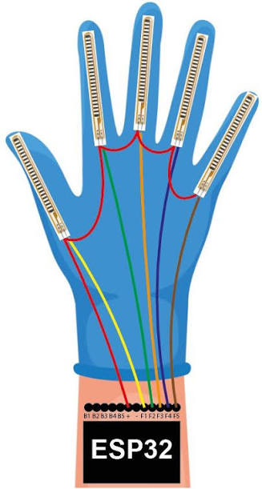

Este proyecto es un **prototipo de sistema inteligente** enfocado en la traducción de la Lengua de Señas Mexicana (LMS). Su función principal actualmente es el **deletreo de palabras letra por letra (dactilología)** a través del reconocimiento y procesamiento visual de las señas de las manos.
Estado actual: El sistema se encuentra en fase de desarrollo temprano. Reconoce el alfabeto básico (A-Z) de forma estática para construir palabras de manera progresiva.
